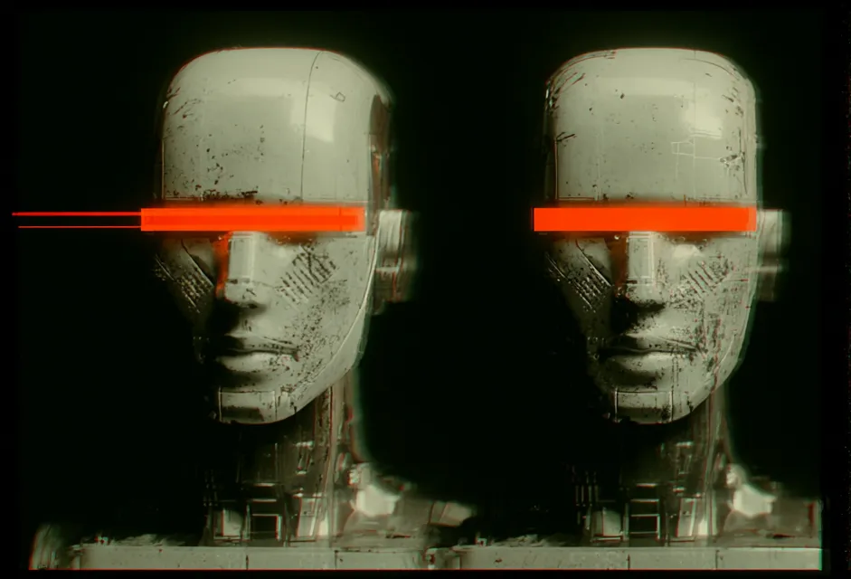
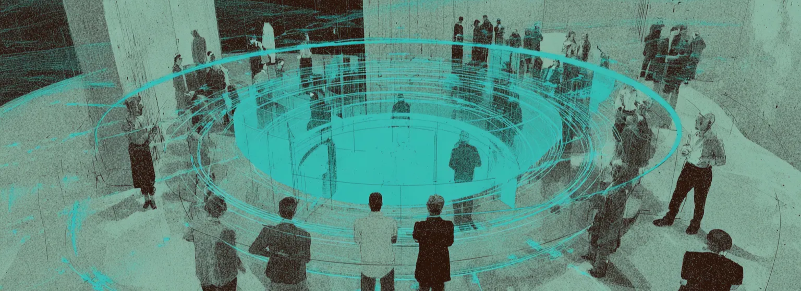
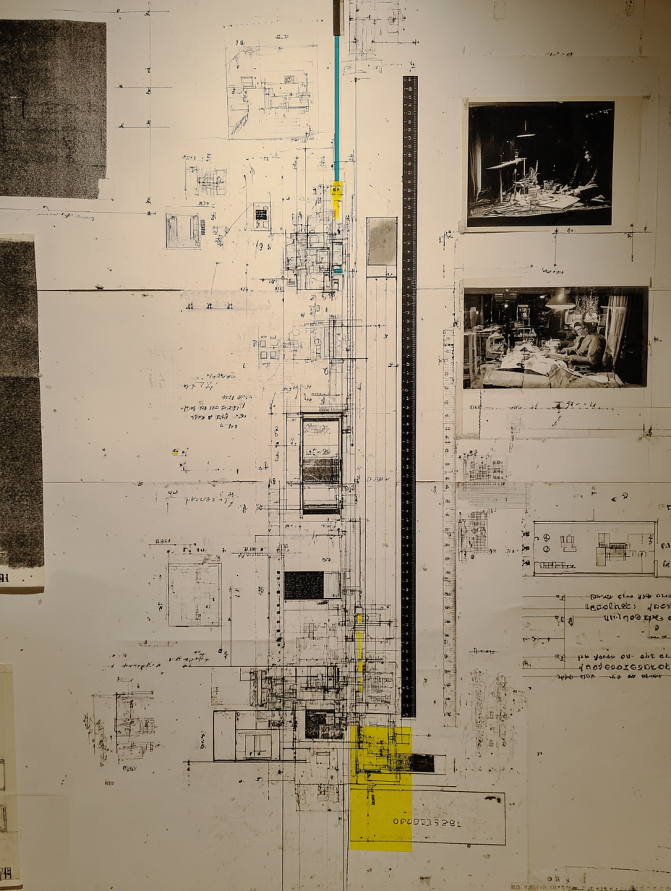

2+ командные стратсессии
в начале и конце лаборатории:
- аудит текущих AI-практик в компании
- определение командных целей на 4 недели
- выбор приоритетных проектов
team track
обучение на реальных задачах компании · персонализированная поддержка · экспертиза с рынка
3+ человек из компании проходят любой продукт AI Mindset. работают над реальными задачами бизнеса и получают:
Эта лаборатория стала настоящим переходом от цифрового хаоса к осмысленной, связанной системе. Каждый проект рождал ощущение движения вперёд. Бонусом я получала время от улучшения продуктивности и энергию от удачных запусков
сверх базовой программы лаборатории
в начале и конце лаборатории:
в первую неделю:
на весь период лаборатории:
каждую неделю — письменно:

результат: не учебные примеры презентации, а рабочие процессы и системы для бизнеса. например, такие:
AI Coaching
AI-ассистент для коучинга и терапии с голосовым интерфейсом. Контекст из заметок, распознавание эмоций.
AI Vision
Автоматическая сортировка и теггинг визуального контента.
AI Learning
Разговорная практика с адаптивной сложностью.
AI Summary
Транскрипция Zoom/Meet со speaker diarization. Action items, синхронизация с CRM.
AI Knowledge
RAG-система для Obsidian. Семантический поиск по заметкам.
AI Project
Мониторинг прогресса с автостатусами.
AI Automation
Email-триаж, CRM-обновления, документооборот. Триггеры с AI-анализом.
AI Research
Поиск и синтез из научных баз.
AI Content
Создание с сохранением brand voice.
AI Analytics
Выявление паттернов, генерация дашбордов и отчетов с визуализацией.
AI Voice
IVR и outbound calling с естественной речью.
AI Sales
Обогащение лидов, автоквалификация.
AI Dev
Анализ PR, выявление багов и уязвимостей.
AI Support
Классификация тикетов, автоответы.
AI Workflow
Аудит и улучшение рабочих процессов.
фрагменты Founder OS Showcase
 с 48:01
с 48:01 с 21:04с 39:33
с 21:04с 39:33не абстрактное обучение. команда работает над реальными задачами компании.
не изолированный корпоративный тренинг. команда учится в окружении сильных практиков из разных индустрий и получает дополнительную экспертизу с рынка.
результат: кросс-индустриальные инсайты, нетворкинг, расширение перспективы.
Самым ценным было нахождение в течение четырех недель в атмосфере единомышленников, которые пользовались всеми инструментами, и меня это подтягивало тоже
Допом я получил расширение горизонта в мире ИИ и новые контакты
базовая программа – выверенная и проверенная (мы проводим 5+ лабораторий в год). командные опции – адаптированы под ваши задачи.
результат: качество + relevance.
когда учится команда – результаты внедряются быстрее. есть с кем обсудить, кто поддержит и продолжит трансформацию после обучения.
результат: устойчивые изменения, а не разовый энтузиазм.


не ждём конца обучения, чтобы начать применять. в процессе лаборатории вы получаете:
результат: ROI начинается ДО завершения обучения, а не после.
Я на 30% начала думать AI-first в работе. Качественно изменилась подготовка обучающих материалов
Самое крутое, что произошло во время лабы — смена мышления. Со ступора до мысли "окей, как это можно разделить на таски и что использовать для их решения?”
10%
скидка на всю команду
15%
скидка на всю команду
20%
скидка на всю команду
700+ человек уже прошли лаборатории и превратили AI из вкладки в мышечную память процессов
Yandex · EPAM · Luxoft · Revolut · SberDevices · Wargaming · PandaDoc · Авито · Renesas
Team track
Бесплатная 30-минутная консультация: разберём задачи и предложим конкретные шаги.
кастомный формат
Обсудите с основателем проекта Александром цели и задачи компании — и подберите кастомный формат.
Работаете в НКО? Бесплатное участие в лаборатории →